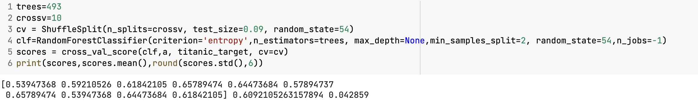

先月未来創造武藤先生のmilspendを見てサブプログラムの一つとしれpypiパッケージ作ってみました。詳しくはpip install pyp333 使った技術：python

去年の研究内容はコロナワクチンデータを処理して分析してみました 使った技術：python
先週の未来創造でクロスバリデーションのプログラムを組み合わせました。sklearnのrandomforestを使いました。テストサイズは0.02の時は一番いいらしいです。使った技術：python
